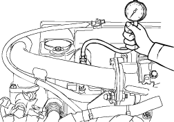

Engine Cranks But Will Not Run
- Check the ''On Board Diagnostic (OBD) System Check''.
Was the OBD System Check performed?
YES – Go to step 2.
NO – Go to OBD System Check. 
- Check the immobiliser control system.
Is there an abnormality in the immobiliser control system?
YES – Check the immobiliser control system.
NO – Go to step 3.
- Check for the following conditions:
If the problem is found, repair as necessary.
- Fuel volume.
- Engine oil condition.
- Damaged or faulty intake air duct.
- Faulty air cleaner and filter.
- Damaged or faulty fuel pipe.
- Damaged or faulty fuses.
- Main relay (20A) fuse
- Ignition 1 (7.5A) fuse
- Glow relay (60A) fuse
- Faulty battery voltage.
- Turn the ignition switch OFF.
- Install a scan tool.
- Turn the ignition switch ON (II).
- Check the engine cranking speed with the scan tool. Turn the engine cranking.
Is the engine cranking speed about 200 rpm (min-1)?
YES – Go to step 8.
NO – Go to (Starter motor inspection).
- Perform a compression pressure measurement. Refer to (compression pressure measurement).
Standard:
about 2,800 kPa (28.6 kgf/cm2, 407 psi) at 200 rpm (min-1)
(When the ECT is about 50°C (122°F))

Is a compression pressure standard?
YES – Go to step 10.
NO – Go to step 9.
- Check for the following conditions:
If the problem is found, repair as necessary.
Refer to engine mechanical.
- Faulty or incorrect valve clearances.
- Fuel injector fixing condition or other damaged.
- Leaking head gasket.
- Excessive valve deposit.
Is a problem found?
YES – Repair as necessary.
NO – Go to step 10.
- Turn the ignition switch OFF.
- Disconnect ECM connector.
- Turn the ignition switch ON (II).